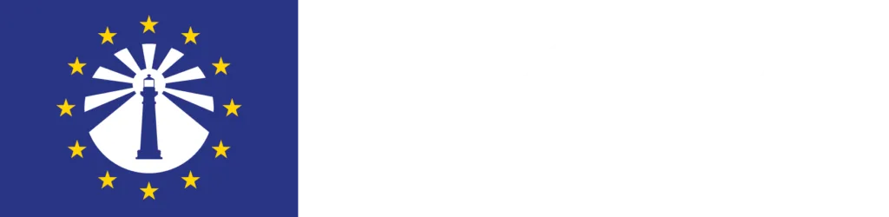

Nidingen är den första svenska fyren som är del av den europeiska fyrleden – ett kulturarv som sträcker sig längs hela Europas kuster.
Nidingen har intagit en hedersplats i ett europeiskt sammanhang: ön är den första svenska fyren som anslutit sig till European Route of Lighthouses (ER-OL). Det placerar Nidingen på samma karta som hundratals historiska fyrar längs Europas atlantkust, Nordsjön och Östersjön.
Att Nidingen valdes är ingen tillfällighet. Fyrplatsen, som tändes redan 1624, är en av Europas äldsta kontinuerligt bemannade fyrar och ett levande vittnesbörd om sjöfartens historia. Dubbelfyrsystemet – unikt i sitt slag – och det välbevarade kulturarvet på ön uppfyller ER-OL:s krav på historisk och arkitektonisk betydelse.
Anslutningen innebär att Nidingen lyfts fram för en internationell publik av kulturturister, sjöfartshistoriker och fyrälskare från hela Europa.
Nidingen är den inledande svenska etappen på European Route of Lighthouses – en milstolpe för svenskt fyrkulturarv.
Med anor från tidigt 1600-tal är Nidingen en av de äldsta fyrplatserna i Nordeuropa – ett historiskt ankare för hela leden.
Anslutningen till ER-OL öppnar Nidingen för besökare från hela Europa och stärker öns ställning som kulturarvsdestination.
En kulturled som förenar Europas fyrar – från norska skär till Medelhavets klippkuster.
European Route of Lighthouses är ett nätverk som förenar historiska fyrar längs Europas kuster. Leden sträcker sig från Norge och Sverige i norr till Portugal och Medelhavet i söder och knyter samman länder med en gemensam maritim historia.
Målet med ER-OL är att lyfta fram fyrarnas historiska, arkitektoniska och kulturella värde, att stödja bevaringsarbete och att skapa hållbar kulturturism längs Europas kuster. Varje fyr på leden representerar ett unikt stycke sjöfartshistoria.
Nidingen är den inledande svenska etappen och öppnar upp för fler svenska fyrar att ansluta sig. Sverige har en rik fyrhistoria längs både Väst- och Ostkusten, och Nidingen banar väg för att denna historia ska ta plats i ett europeiskt sammanhang.